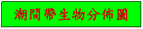
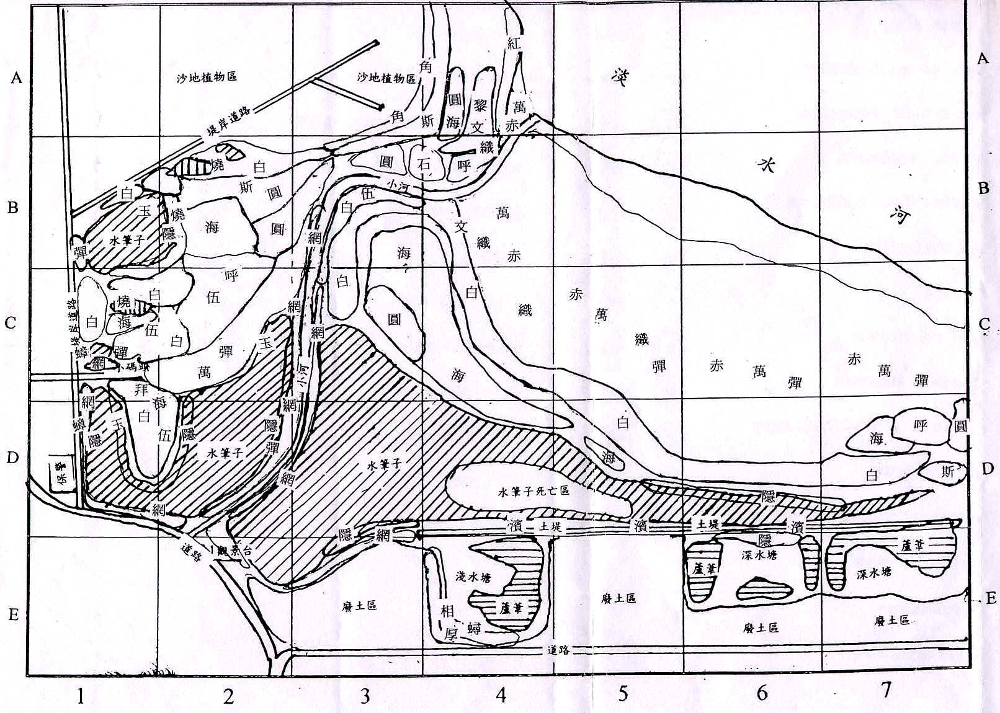

|  | ||
|
符號
生物種類
主要分布區
白 白扇招潮蟹
BlB2ClC2C3C4DlD2D5D6D7沙泥地
網 網紋招潮蟹
ClC3DlD2El高潮帶泥濘地
厚 台灣厚蟹
葦原區泥濘地
﹒
濱 濱蟹(隆脊張口蟹)
D4D5D6潮上帶土堤硬泥地
伍 伍氏厚蟹
ClC2C3DlD2
高潮帶沙泥地
呼 北方呼喚招潮蟹
B4C2D7 中潮帶沙泥地
圓 圓球股窗蟹
A4B2B3C3C4D7中高潮帶沙地
蟳 鋸緣青蟳
E4泥地與全潮間帶
拜 角眼拜佛蟹
Cl沙泥地
石 石蟳
B3B4中低潮帶沙泥地
|
符號
生物種類 主要分布區 |
符號
生物種類
主要分布區 織
織紋螺
B4C4C5C6沙地與泥濘地有少量分布;
彈
彈塗魚
B1ClC2C3C4C5C6C7DlD2E4
蟲
海虫
中高潮帶沙泥地
紅
紅虫
A4濕沙地
蝦
蝦猴
B3B4ClC2沙泥地中．
藤
藤壺
整個潮間帶的物體上
蟑
海蟑螂
D1D7的岩石中
秀
秀麗長方秀蟹
B1B2水筆仔林中
藍
藍色小蟹
C1小馬頭前方
不知明蟹1
B3B4岩石縫下 不知明蟹2 B1B2D1水筆仔林中 |